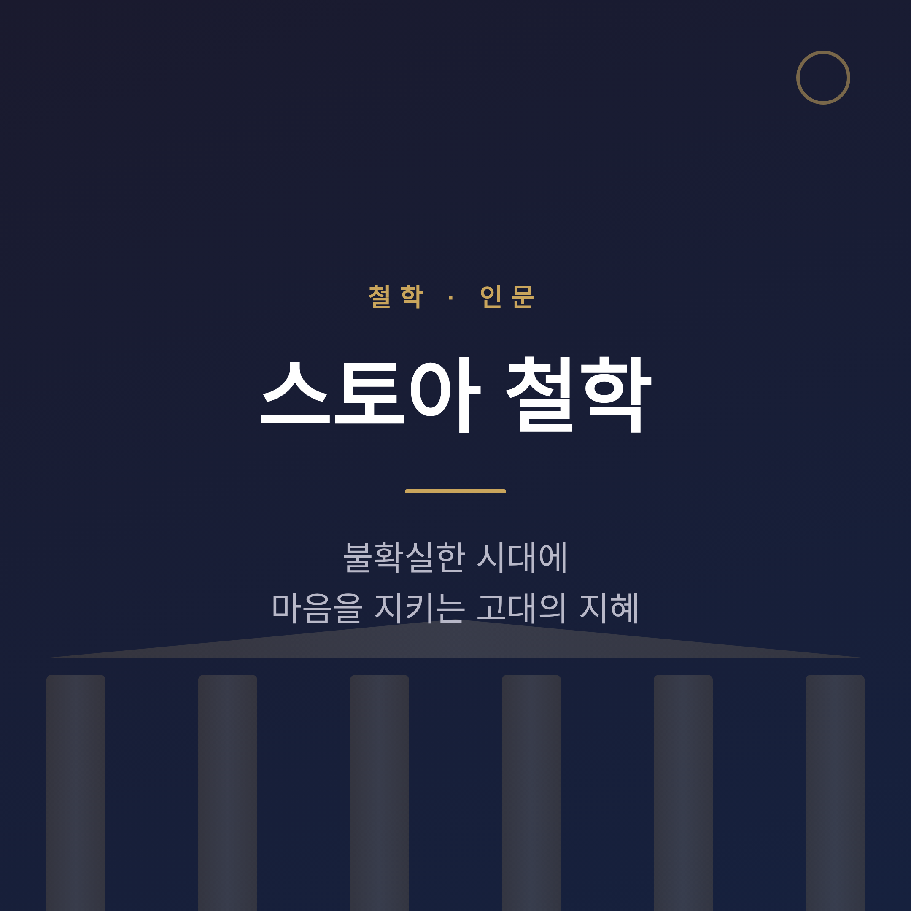
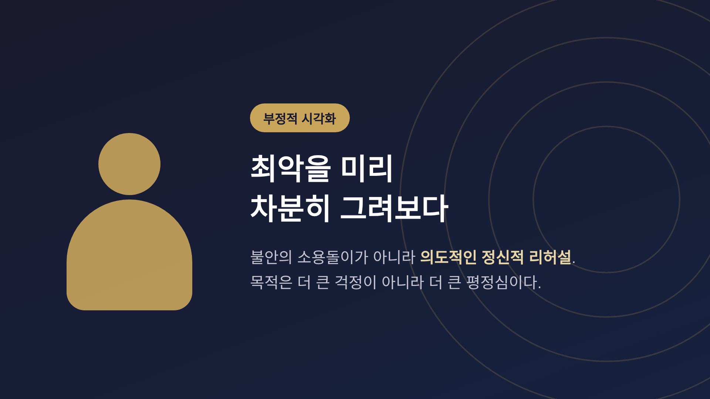

이번 글에서는 스토아 철학을 마음을 지키는 실천 지혜로서 정리해 보겠습니다.
먼저 결론부터 말씀드립니다. 스토아 철학은 감정을 억누르는 차가운 금욕이 아닙니다. 통제할 수 있는 것에 집중하고, 나머지는 받아들이며, 미덕에 따라 사는 마음의 기술입니다. 2천 년 전의 지혜가 오늘날 인지행동치료(CBT)의 뿌리로 다시 주목받는 이유가 여기에 있습니다.
스토아 철학은 기원전 약 300년경, 키프로스 키티온 출신의 제논이 아테네에서 창시했습니다.
'스토아'라는 이름의 유래가 재미있습니다. 아테네 공공 시장에 있던 '스토아 포이킬레', 곧 '채색된 주랑'에서 왔습니다. 제논과 초기 학파가 이 열린 회랑에 모여 가르쳤기에 그대로 학파의 이름이 되었습니다.
제논은 본래 상인이었습니다. 난파 사건을 겪은 뒤 아테네에서 철학에 입문한 것으로 전해집니다. 잃음에서 출발한 철학이라는 점이, 어쩐지 이 사상의 결을 미리 보여주는 듯합니다.
그의 체계는 논리학·자연학·윤리학 세 분야로 이루어지며, 그중 중심은 윤리학입니다. 어떻게 살 것인가 — 스토아 철학은 처음부터 이 질문을 향하고 있었습니다.
스토아 철학은 후기 로마 시대로 가면서 이론보다 실천으로 무게중심이 옮겨갑니다. 그 흐름을 가장 잘 보여주는 세 인물이 있습니다.
신분의 양 끝이 여기 다 있습니다. 노예와 황제. 부유한 권력자와 가진 것 없는 자.
그렇게 다른 자리에 선 사람들이 같은 철학을 붙들었습니다. 황제 마르쿠스 아우렐리우스가 노예 출신 에픽테토스의 가르침을 깊이 받아들였다는 사실은 그 자체로 하나의 메시지입니다. 스토아 철학은 자리를 가리지 않는 지혜였던 셈입니다.
스토아 철학의 핵심을 하나만 꼽으라면 '통제의 이분법'을 들겠습니다. 에픽테토스가 정식화한 개념입니다.
세상일은 둘로 나뉩니다. 내 통제 안에 있는 것과 밖에 있는 것.
안에 있는 것은 나의 판단과 의견, 욕구, 그리고 어느 정도까지의 내 행동입니다. 밖에 있는 것은 타인의 행동, 외부 사건, 그리고 결과입니다.
여기서 한 가지를 짚고 넘어가야 합니다. 흔히 이 개념을 "X는 통제 가능, Y는 불가능"으로 너무 단순하게 가르는 경우가 많습니다. 모던 스토이시즘의 마이클 트렘블레이는 바로 이 지점을 사람들이 오해한다고 지적합니다. 온전히 우리에게 달린 것은 우리의 판단과 의지의 작용이지, 행동의 결과까지 100% 손에 쥔다는 뜻이 아닙니다.
그러니 핵심은 이렇습니다. 내가 할 수 있는 일에 힘을 쏟고, 나머지는 담담히 받아들이는 것.
예전엔 결과에 매달려 마음을 졸였습니다. 지금은 내가 한 노력까지가 내 몫이라 여깁니다. 이 작은 선 긋기 하나가 마음의 부담을 크게 덜어줍니다.
스토아 철학에서 삶의 목표는 '자연과 일치하여 사는 것'입니다. 이성과 미덕에 따라, 우주의 질서와 모든 인간에게 공통된 가치를 인정하며 사는 삶을 뜻합니다.
그 중심에 네 가지 미덕이 있습니다.
이 미덕을 길러 도달하려는 것이 '에우다이모니아'입니다. 흔히 '행복'으로 옮기지만, 본뜻은 '번영' 혹은 '충만함'에 더 가깝습니다.
또 하나 알아둘 개념이 '아파테이아', 곧 평정심입니다. 분노·두려움·질투 같은 파괴적 감정에서 자유로운 마음 상태를 가리킵니다. 삶의 부침 속에서도 명료한 판단을 잃지 않는 것입니다.
오해하지 마시길 권합니다. 아파테이아는 사람을 '감정 없는 돌'로 만드는 것이 아닙니다. 지성의 조화로운 앎 속에서 평온해지는 것입니다.
여기에 '아모르 파티', 운명애를 더할 수 있습니다. 일어나는 모든 일을, 고통과 상실까지도 받아들이고 긍정하는 태도입니다. 다만 이 라틴어 표현은 니체가 정식화한 것으로 널리 알려져 있는데, 니체가 스토아 사상을 그대로 계승한 것은 아닙니다. 통하는 데가 있되, 같은 것은 아니라고 보는 편이 정확합니다.
스토아 철학자들이 즐겨 행한 정신 수련이 있습니다. '프레메디타티오 말로룸', 우리말로 옮기면 '부정적 시각화'입니다.
나쁜 일을 미리 머릿속으로 그려보는 것입니다. 최악의 상황을 차분히 예행연습함으로써, 막상 역경이 닥쳤을 때 더 이성적으로 대응하게 하는 도구입니다.

여기서 중요한 단서가 있습니다. 이것은 불안한 생각의 소용돌이가 아닙니다. 의도적이고 구조화된 정신적 리허설입니다. 목적은 더 큰 걱정이 아니라 더 큰 평정심입니다.
우리는 보통 최선만 계획합니다. 그러다 나머지에 기습당합니다. 부정적 시각화는 세상을 조금 더 현실적으로 바라보게 해 줍니다.
스토아 철학이 현대 인지행동치료(CBT)의 철학적 뿌리라는 점은 폭넓게 인정됩니다.
CBT의 직접적 선구자인 합리적 정서행동치료(REBT)는 1950년대 후반 앨버트 엘리스가 개발했습니다. 그는 치료사로 훈련받기 전, 청년기에 이미 에픽테토스와 세네카, 마르쿠스 아우렐리우스를 읽었습니다.
엘리스가 즐겨 인용한 에픽테토스의 말이 있습니다.
"사람은 사물 자체가 아니라, 그것에 대한 견해에 의해 동요된다."
정서적 문제는 외부 사건 그 자체가 아니라 그 사건을 바라보는 비합리적 신념에서 비롯된다 — 이 통찰이 그대로 현대 치료의 핵심이 되었습니다. 잘못된 생각을 식별하고 바꾸는 '인지 재구조화'가 그 해법입니다.
2천 년 전의 철학이 오늘의 치료실에서 살아 있는 셈입니다.
가장 흔한 오해를 짚고 넘어가야겠습니다. 스토아 철학이 '감정 없는 사람이 되는 것'이라는 통념입니다.
이는 사실과 다릅니다. 스토아 철학은 감정을 두 종류로 구분했습니다.
스토아 철학이 가르친 것은 감정의 억압이 아니라 감정의 조절입니다. 이성과 자연에 부합하는 감정은 오히려 길러냅니다. 정신건강을 이야기할 때 이 구분은 결코 사소하지 않습니다.
좋은 면만 말씀드리지는 않겠습니다. 통제의 이분법을 거칠게 받아들이면, 바꿀 수 있는 현실 앞에서도 너무 쉽게 체념하는 핑계가 될 수 있습니다. 어떤 지혜든 오용될 여지는 있습니다. 그래서 뉘앙스를 함께 읽는 일이 중요합니다.
스토아 철학은 최근 다시 큰 주목을 받고 있습니다.
현대적 부흥의 중심에는 작가 라이언 홀리데이가 있습니다. 2014년경부터 『The Obstacle Is the Way』, 『The Daily Stoic』 같은 베스트셀러로 대중적 부흥을 이끌었습니다.
인기 요인은 대체로 이렇게 정리됩니다.
특히 고강도·고속의 테크 업계에서 호응이 컸습니다. 한 보고에 따르면 온라인 플랫폼에서 스토아 관련 논의가 크게 늘었다고도 합니다. 다만 이 수치는 단일 출처라 단정해 말씀드리기는 조심스럽습니다.
분명한 것은 흐름입니다. 빠르고 불확실한 시대일수록, 마음을 지키는 오래된 기술을 찾는 사람이 늘고 있다는 것.
끝으로 한 마디만 더 드리겠습니다.
스토아 철학이 건네는 핵심은 결국 한 줄로 압축됩니다.
"바꿀 수 있는 것에 힘을 쏟고, 바꿀 수 없는 것은 받아들인다."
거창한 깨달음이 아닙니다. 오늘 하루, 내 손에 달린 일과 그렇지 않은 일을 한 번 구분해 보는 것 — 그 작은 연습에서 시작됩니다.
불확실한 시대에 마음 둘 곳을 찾으신다면, 2천 년을 건너온 이 고요한 지혜를 한번 곁에 두어 보시면 좋겠습니다.
해시태그: #스토아철학 #마르쿠스아우렐리우스 #에픽테토스 #통제의이분법 #회복탄력성 #스토아주의 #명상록 #마음챙김 #인지행동치료 #철학